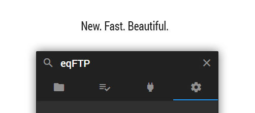

What is this?
eqFTP is a FTP/SFTP client for Brackets code editor.
It delivers an intuitive interface to work with your remote servers, synchronization, and remote file structure exploring, and password encryption.

What's next?
In next 3 months:
- Tips. Hints. Guides. Make eqFTP more user friendly.
- Files' comparison. Yeah, we'll bring back checking files for differences, but now it'll compare files on upload too!
- More available remote actions. In previous version there was ability to download and upload whole directories. This will be back soon and more.
- Sorting connections. It is an old feature as well and we will add this soon.
- Panel resizing. Yeah.
In distant future:
- Moving from Mustache + jQuery to React
- More interactions with user - achievements, easter eggs, etc.
- Things that will be available to donators only.
- Saving settings in Cloud.